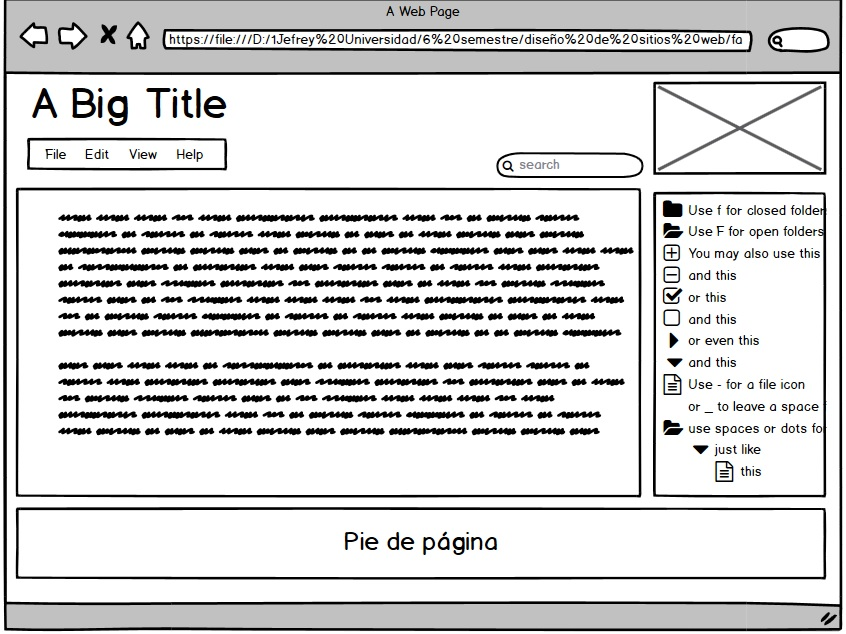

Comenzando con lo básico en HTML
Como vemos,Según Celaya Luna, A. (2014), el lenguaje HTML es un lenguaje de marcas o etiquetas. Esto quiere decir que los elementos que conforman la página web se describen mediante palabras especiales que marcan el inicio y el final de los mismos, estas palabras se denominan etiquetas.
A su vez existen algunas excepciones, pero en general las etiquetas se indican por pares, y estas se muestran de la siguiente forma.
- Etiqueta de apertura: denotada por el carácter "<", seguido del nombre de la etiqueta que se va a utilizar en la estructura de texto, estas van sin espacios en blanco, y terminando con el carácter ">".
- Etiqueta de cierre: : denotada por el carácter “<”, seguido del carácter “/”, seguido del nombre de la etiqueta que se va a utilizar en la estructura de texto, estas van sin espacios en blanco, y terminando con el carácter “>”.
Estructura de un documento HTML
todas las páginas HTML contienen los mismos elementos o etiquetas básicas:
- Doctype: es la primera línea de código que tiene que estar en cualquier documento HTML. Esta línea indica al navegador que especificación de HTML se está utilizando.
Ejemplo: <!DOCTYPE html> - HTML: El par de etiquetas <html> y </html> se encuentran al principio y al final de todo documento HTML y sirve para indicar a todas las aplicaciones que pueden analizar texto sin formato (no solamente a los navegadores) que esa página utiliza HTML.
- Head: Las etiquetas <head> y </head> delimitan el contenido de la cabecera del documento, es decir, el título de la página y una información que no aparece en la pantalla.
- Title: El par de etiquetas <title> y </title> rodea el texto del título, el titulo aparece en la barra de titulo del navegador web cuando presenta la página. Normalmente va dentro del elemento <head>
- Meta: <Meta> permite aportar metainformación al documento, para su mejor identificación e indexación por los motores de búsqueda.
- Body: Las etiquetas <body> y </body> rodean el contenido visible de la página. También puede llevar incluida información sobre las propiedades de la página.
Etiquetas comunes
- Comentarios: <!--comentarios--> para escribir anotaciones que sirven para ayudar a la compresión del código. Lo que se escribe dentro de esta etiqueta es ignorado por el navegador y no se muestra en la página.
- <b>…</b >: aplica negrita al texto incluido entre las etiquetas (es equivalente a usar <strong>….</strong>.
- <i>…</i>: aplica cursiva al texto incluido entre las etiquetas (es equivalente a usar <em>…</em>.
- <u>…</u>: aplica subrayado.
- <font>…</font>: Delimita un texto con un formato de fuente determinado definido por sus propiedades. La etiqueta <font> puede incluir los 3 parámetros (tamaño, fuente y color)
- h1, h2, h3, h4, h5, h6: indican 6 niveles de formato de encabezados em los que <h1>…</h1> delimitaría el tipo de fuente de mayor tamaño

Mockups
Referencia: los datos fueron obtenidos de las siguientes fuentes.
Celaya Luna, A. (2014). Creación de páginas web: HTML5. p. 1 - 60. https://elibro-net.bibliotecavirtual.unad.edu.co/es/ereader/unad/56045
Etiquetas HTML. Qué son y cómo se usan. (s. f.). [Imagen]. websgalicia.es. https://websgalicia.es/blog/wp-content/uploads/etiquetas-html-800x560.jpg
N. (2020, 9 agosto). Cómo mostrar etiquetas HTML como texto. Noelia Espinosa. http://www.noeliaespinosa.com/mostrar-codigo-html-sin-que-se-ejecute/